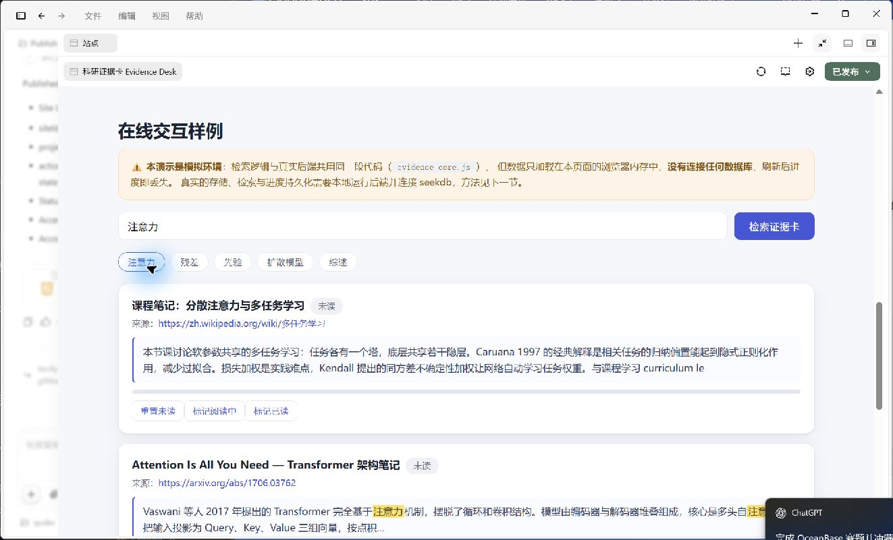

写综述和复习时最常见的三件事：
摘抄和感想混在一起，写到论文里想引用时，已经不记得这段是转载哪篇文献、哪一页。证据卡强制每张卡携带标题 + 原始 URL + 匹配片段，出处永远可回溯。
同一个概念在不同资料里出现过，但只能靠翻文件夹和回忆。输入关键词，一次检索全部笔记，按匹配得分排序，命中的原文片段直接高亮展示。
长文档读到一半，下次打开又从头找起。未读 / 阅读中 / 已读三态加百分比进度保存在数据库里，关掉浏览器、重启服务都还在。
标题、URL、正文一次录入，服务端校验后以参数化 SQL 写入 seekdb。
SQL 层 LIKE 初筛候选，应用层按词频加权评分，截取命中词周围的真实原文片段，生成带来源的证据卡。
阅读器内滚动位置自动换算百分比，三态状态 + 进度持久化在数据库，重启不丢。
数据库不可用时 API 明确返回 500 错误，绝不返回假数据或空壳成功。
自带 8 篇公开主题的非私人样例笔记，一条命令灌库即可体验完整流程。
仅一个 npm 依赖（mysql2），Windows / macOS / Linux 均可运行。
evidence-core.js），
但数据只加载在本页面的浏览器内存中，没有连接任何数据库，刷新后进度即丢失。
真实的存储、检索与进度持久化需要本地运行后端并连接 seekdb，方法见下一节。
下方截图取自 Qoder 内置预览，未裁剪、未修图。

127.0.0.1:2896，root 空密码，仅限本地隔离开发）。qoder/ 目录：npm install.env.example 为 .env（默认值即可）。npm run seednpm start，打开 http://127.0.0.1:3210/app 使用连接真实数据库的完整应用。npm test（需 seekdb 在线）。GitHub 源码：David-goldenman/powercontext · 2026-competition-ecosystem/qoder